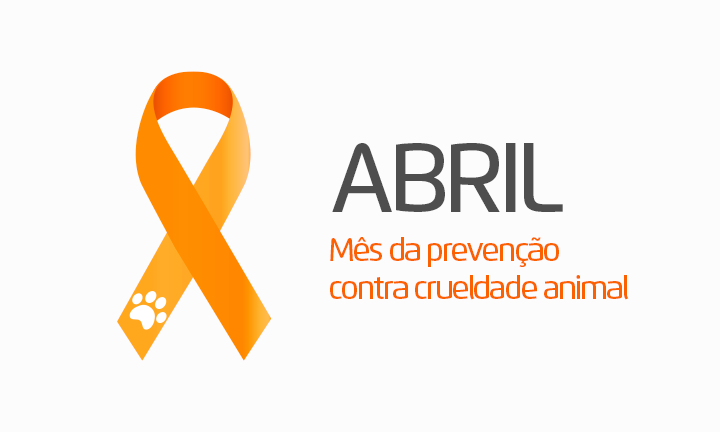

Início
Campanhas
ONGs
Leis
|
Objetivo do Site
Este site foi criado com o objetivo de conscientizar as pessoas sobre a importância de proteger os animais e combater todas as formas de maus-tratos, abandono e negligência.
A proposta é informar, educar e sensibilizar a população, mostrando que os animais são seres que sentem dor, medo e necessidade de cuidado, e que merecem respeito e dignidade.
Por meio de conteúdos explicativos, exemplos e informações relevantes, o site busca orientar os visitantes sobre como cuidar adequadamente dos animais, destacando a importância
da alimentação correta, do abrigo, da atenção, do acompanhamento veterinário e da guarda responsável. Além disso, o site também incentiva a adoção consciente, ajudando a
reduzir o número de animais abandonados.
Outro objetivo importante é alertar sobre as consequências dos maus-tratos, tanto para os animais quanto para a sociedade, e informar sobre as leis de proteção animal,
incentivando as pessoas a denunciarem situações de abuso.
Dessa forma, o site pretende não apenas transmitir conhecimento, mas também inspirar mudanças de atitude, promovendo mais empatia, responsabilidade e compromisso com o
bem-estar animal. Ao acessar o site, espera-se que cada pessoa se torne um agente de transformação, contribuindo para um mundo mais justo e seguro
para todos os seres vivos.

Sobre o Projeto Escolar
O trabalho foi desenvolvido como atividade escolar para praticar HTML 4.0 e aprender sobre responsabilidade social.
Informações
| Autores |
Sebastian A. S. Diaz e Matheus F. Mation |
| Professores |
Ronildo e Cristiane |
| Curso |
1ºD, Informática para internet |
Fontes
Sobre as leis
As informações sobre leis foram baseadas em conteúdos oficiais do governo brasileiro, incluindo a Lei de Crimes Ambientais e atualizações publicadas em sites oficiais como
o IBAMA e o Planalto.
|